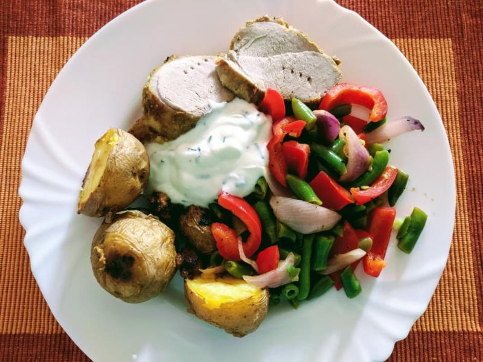

Dnes tu mám zase po delší době něco pro masožravce :-) Na recept jsem narazila při listování v prázdninovém Albert magazínu, a tak jsme si s Olim takovýmto slavnostním obědem rozzářili jedno všední pondělí…
- 800g nových brambor
- sůl
- 800 g vepřové panenky
- 4 lžíce plnotučné hořčice
- 3 lžičky grilovacího koření
- 6 lžic slunečnicového oleje
- 200 g zelených fazolek
- 1/2 červené cibule
- 1/2 červené papriky
- 1/2 žluté papriky
- 200ml bylinkového dresinku
Omyté brambory ve slupce vaříme v osolené vodě 10 minut, poté slijeme. Očištěnou osolenou panenku potřeme hořčicí a zasypeme grilovacím kořením. Rozpálíme 3 lžíce oleje a zprudka opečeme panenku ze všech stran, přeléváme přitom výpekem. Vložíme do zapékací mísy, okolo nasypeme přepůlené brambory a pečeme v troubě na 190°C 10 minut dozlatova.
Mezitím rozehřejeme zbylý olej a orestujeme fazolky s cibulí pokrájenou na měsíčky 3 minuty. Přisypeme nudličky paprik, osolíme, opepříme a restujeme další dvě minuty. Servírujeme spolu s plátky panenky, pečenými brambory a domácím jogurtovým dresinkem (já smíchala jen Hollandii s čerstvou nakrájenou pažitkou).
